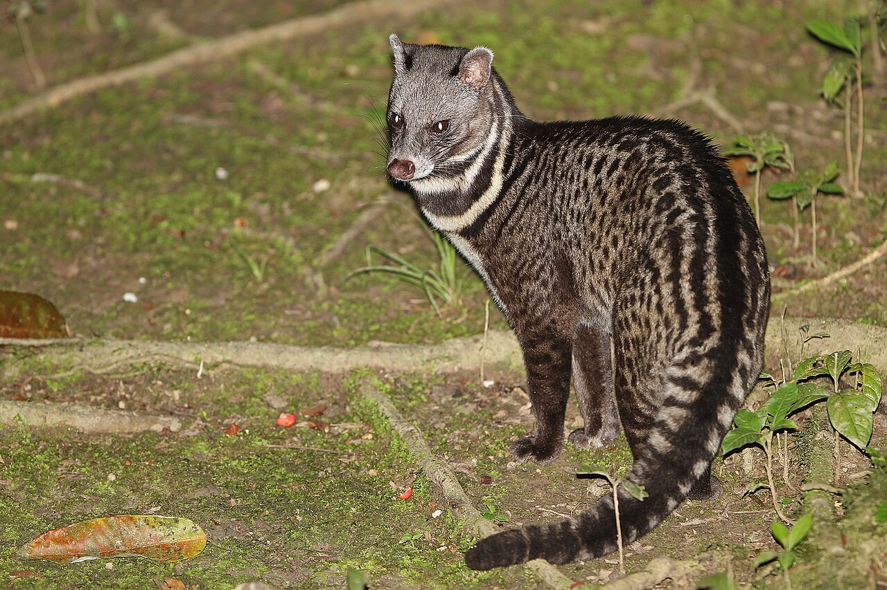

Mammalian Conservation Ecology
Meaghan N. Evans
I'm a wildlife ecologist working on the conservation of mammals, especially carnivores, in landscapes altered by agriculture and development.
Biological Scientist IV · Fish & Wildlife Research Institute
Florida Fish and Wildlife Conservation Commission
Ph.D., Cardiff University

- Study systems
- Lowland Borneo · Florida
- Focal taxa
- Civets, clouded leopards, otters & small carnivores
- Methods
- GPS telemetry, camera traps, ecotoxicology, physiology, long-term monitoring
- Pressures
- Habitat loss, agriculture, emerging disease
01 About
Background
I'm a mammalian conservation ecologist interested in how carnivores and other wild mammals use, and cope with, human-modified landscapes. My work combines live-capture, GPS telemetry and camera trapping with physiological and toxicological sampling, so I can relate where animals go to how healthy they are.
I've been interested in animals for as long as I can remember, and I paid for my early fieldwork with environmental education and research assistant jobs. Time at the Cheetah Conservation Fund in Namibia convinced me to work on mammals. At Miami University I studied prairie vole behaviour. In 2012, as an undergraduate volunteer, I spent two months running camera traps for clouded leopards in the Kinabatangan, and that led me back to Borneo for carnivore research.
I did my Ph.D. at Cardiff University, based at Danau Girang Field Centre in the Lower Kinabatangan floodplain of Sabah, Malaysian Borneo, where I spent six years as a research scientist and field leader. I set up and led the Kinabatangan Small Carnivore Project, which looked at how civets and other small carnivores cope with forest fragmentation and oil palm. We designed it with the Sabah Wildlife Department so the results could feed into state planning for small carnivores and into reducing agricultural pollution. My team live-trapped and sampled more than 100 small carnivores and deployed 29 GPS collars on Malay and common palm civets, the first GPS tracking of any viverrid. With colleagues at Arizona State University, I've since combined those tracks with airborne LiDAR and hyperspectral data to look at how forest structure shapes space use.
Since 2021 I've worked at the Florida Fish and Wildlife Conservation Commission's Fish and Wildlife Research Institute, where I turn long-term, statewide monitoring data into the information managers use. I produce abundance and trend estimates for Florida's imperiled beach-nesting shorebirds and seabirds, working with the Florida Shorebird Alliance, and I designed the framework for Florida's long-term bald eagle monitoring plan. I've also contributed to wildlife disease investigations, including H5N1 avian influenza in bald eagles. Working inside a state agency has shown me how management decisions get made, and I want my research to feed directly into them.
I've also been involved in conservation planning. I was a technical advisor for the Sunda Clouded Leopard Action Plan for Sabah (2018–2028), which the Sabah State Cabinet adopted in 2019, and I contributed to the IUCN Otter Specialist Group's Global Otter Conservation Strategy.
02 Research
Research areas
My research asks how mammals persist in landscapes people have changed, and what that costs them in movement, health and exposure to contaminants and disease. It runs along three linked lines, each building on work I've already done.
-
Mesocarnivores in working landscapes
How adaptable carnivores move through, use and are affected by farmland, plantations and development. I pioneered GPS tracking of civets in Borneo's oil palm landscapes; next, I'm applying camera traps, telemetry and health sampling to mesocarnivores such as opossums and raccoons along forest-to-suburb gradients, including surveillance for emerging pathogens like H5N1, with movement data feeding wildlife corridor planning.
-
Contaminants and wildlife health
What living alongside agriculture does to wild mammals. I developed hair-based metal monitoring and described blood profiles in civets near oil palm; next, I'm building a contaminant observatory on Borneo's Kinabatangan River with long-term partners, tracing metals and rodenticides through the food web from small mammals to elephants.
-
Predators and long-term monitoring for management
Turning long-term data into decisions. At the Florida Fish and Wildlife Conservation Commission I produce statewide abundance and trend estimates for imperiled beach-nesting birds and contributed to 45 years of bald eagle analyses; next, I'm studying the mammalian predators of those nesting colonies, such as raccoons, foxes and coyotes, so managers can target predator control along changing coastlines.
04 Teaching
Teaching and mentoring
I teach mammalogy, wildlife field techniques and movement ecology with an emphasis on hands-on fieldwork. At Danau Girang Field Centre I coordinated more than 50 university field courses, with over 800 students from 16 institutions, and I mentor undergraduate and graduate students through their own research projects.
05 Contact
Collaborations and students
I'm always happy to hear from potential collaborators, and from students interested in mammal ecology and conservation.